Web Teknolojileri · Dönem Ödevi Raporu
Hazırlayan: Abdullah Ceylan · 241229060
Uygulama (PHP 8.3, framework kullanılmadan; veri erişimi PDO) yalnızca JSON döner. HTML5 + CSS3 arayüz frontend container'ında durur ve veriyi
JavaScript fetch ile alır; React gibi bir çerçeve kullanılmaz. Apache /api/ isteklerini
uygulama servisine iletir (-D WEBAPI).
| Bölüm | Durum |
|---|---|
| Aşama 1 · Altyapı – dört doğrulama, komutlar ve çıktılar | Tamamlandı (12.11.2026) |
| Aşama 2 · Uygulama – katmanlar, istek yolu, yedi ekran, okuma/yazma ayrımı, replikasyon gecikmesi, 400 px | Tamamlandı (18.11.2026) |
| Aşama 3 · Redis | Hazırlanıyor |
| Aşama 4 · Değişiklik talebi | Hazırlanıyor |
| Varsayımlar | Güncel |
Sistem altı container'dan oluşur. Tarayıcı yalnızca Apache ile konuşur; veritabanına yalnızca uygulamanın veri katmanı ulaşır.
Yazmalar kaynak sunucuya (mysql-primary), okumalar replikaya (mysql-replica) gider. Container'lar birbirine
servis adı ve iç port ile bağlanır; 3307 / 3308 / 6379 dış portları yalnızca geliştirme bilgisayarından erişim içindir.
| Servis | Görevi | Erişim |
|---|---|---|
frontend | Apache 2.4: HTML/CSS/JS sunar, /api/ isteklerini uygulamaya iletir | localhost:8080 |
uygulama | PHP 8.3 Web API, Apache + PDO (bizim yazdığımız servis) | uygulama:8000 (yalnızca iç ağ) |
mysql-primary | Yazma; şema ve örnek veri ilk açılışta yüklenir | mysql-primary:3306 · localhost:3307 |
mysql-replica | Okuma; salt okunur, aynı zamanda yedek | mysql-replica:3306 · localhost:3308 |
replica-setup | Replikayı GTID ile bir kez kurar, salt okunur yapar ve çıkar | – |
redis | Menü önbelleği ve oturum deposu (AOF açık) | redis:6379 · localhost:6379 |
Başlangıç paketi temiz bir kurulumla (docker compose up -d, önceden volume yokken) çalıştırıldı ve dört madde doğrulandı.
Tüm komutlar depo kökünden, Windows 11 + Docker Desktop 29.7.2 üzerinde 12.11.2026'da çalıştırıldı.
Not: Çıktılardaki mysql: [Warning] Using a password on the command line interface can be insecure. satırı
(parolayı komut satırında verdiğimiz için) okunabilirlik amacıyla çıkarıldı. Ham çıktılar rapor/asama-1/ klasöründedir.
Türkçe karakterlerin doğru görünmesi için istemciye --default-character-set=utf8mb4 verildi.
> docker compose ps -a
NAME IMAGE COMMAND SERVICE CREATED STATUS PORTS
yemekhane-frontend-1 yemekhane-frontend "httpd-foreground -D…" frontend 28 seconds ago Up 28 seconds (healthy) 0.0.0.0:8080->80/tcp, [::]:8080->80/tcp
yemekhane-mysql-primary-1 mysql:8.4 "docker-entrypoint.s…" mysql-primary 28 seconds ago Up 28 seconds (healthy) 0.0.0.0:3307->3306/tcp, [::]:3307->3306/tcp
yemekhane-mysql-replica-1 mysql:8.4 "docker-entrypoint.s…" mysql-replica 28 seconds ago Up 28 seconds (healthy) 0.0.0.0:3308->3306/tcp, [::]:3308->3306/tcp
yemekhane-redis-1 redis:7.4-alpine "docker-entrypoint.s…" redis 28 seconds ago Up 28 seconds (healthy) 0.0.0.0:6379->6379/tcp, [::]:6379->6379/tcp
yemekhane-replica-setup-1 mysql:8.4 "bash /replica-setup…" replica-setup 28 seconds ago Exited (0) 17 seconds ago
> docker compose logs replica-setup --no-log-prefix
[replica-setup] Kaynakta replikasyon kullanıcısı oluşturuluyor.
[replica-setup] Kaynağın anlık kopyası alınıyor.
[replica-setup] Kopya replikaya yükleniyor.
[replica-setup] Replikasyon başlatılıyor.
[replica-setup] Replikasyon çalışıyor (IO=Yes, SQL=Yes). Replika salt okunur.
> docker compose exec -T mysql-replica mysql -uroot -pyemekhane_kok -e 'SHOW REPLICA STATUS\G' | grep -E 'Source_Host|Replica_IO_Running|Replica_SQL_Running|Seconds_Behind_Source|Auto_Position|Last_.*Error:' Source_Host: mysql-primary Replica_IO_Running: Yes Replica_SQL_Running: Yes Last_Error: Seconds_Behind_Source: 0 Last_IO_Error: Last_SQL_Error: Replica_SQL_Running_State: Replica has read all relay log; waiting for more updates Auto_Position: 1 > docker compose exec -T mysql-replica mysql -uroot -pyemekhane_kok -e 'SELECT @@read_only, @@super_read_only' @@read_only @@super_read_only 1 1 > docker compose exec -T mysql-replica mysql -uyemekhane_app -pUyg_2026 yemekhane -e 'SELECT (SELECT COUNT(*) FROM kullanicilar) kullanici, (SELECT COUNT(*) FROM yemekler) yemek, (SELECT COUNT(*) FROM menuler) menu, (SELECT COUNT(*) FROM rezervasyonlar) rezervasyon' kullanici yemek menu rezervasyon 30 52 84 367
Beş servis healthy, tek seferlik replica-setup Exited (0). Replikasyonun iki thread'i de çalışıyor
(IO = Yes, SQL = Yes), GTID otomatik konumlandırma açık (Auto_Position: 1), replika salt okunur ve örnek verinin tamamı replikada.
> docker compose exec -T mysql-replica mysql -t --default-character-set=utf8mb4 -uyemekhane_app -pUyg_2026 yemekhane -e "SELECT k.id, k.ad, k.bakiye, (SELECT SUM(tutar) FROM bakiye_hareketleri WHERE kullanici_id = k.id) AS hareket_toplami FROM kullanicilar k WHERE k.id = 7" +------+--------+--------+-----------------+ | id | ad | bakiye | hareket_toplami | +------+--------+--------+-----------------+ | 7 | Mehmet | 455.00 | 455.00 | +------+--------+--------+-----------------+ > docker compose exec -T mysql-primary mysql -t --default-character-set=utf8mb4 -uyemekhane_app -pUyg_2026 yemekhane -e 'CALL sp_bakiye_yukle(7, 100)' +------------+--------+ | hareket_id | bakiye | +------------+--------+ | 456 | 555.00 | +------------+--------+ > docker compose exec -T mysql-replica mysql -t --default-character-set=utf8mb4 -uyemekhane_app -pUyg_2026 yemekhane -e "SELECT k.id, k.ad, k.bakiye, (SELECT SUM(tutar) FROM bakiye_hareketleri WHERE kullanici_id = k.id) AS hareket_toplami FROM kullanicilar k WHERE k.id = 7" +------+--------+--------+-----------------+ | id | ad | bakiye | hareket_toplami | +------+--------+--------+-----------------+ | 7 | Mehmet | 555.00 | 555.00 | +------+--------+--------+-----------------+ > docker compose exec -T mysql-replica mysql -t --default-character-set=utf8mb4 -uyemekhane_app -pUyg_2026 yemekhane -e "SELECT id, kullanici_id, tur, tutar, aciklama, olusturma FROM bakiye_hareketleri WHERE kullanici_id = 7 ORDER BY id DESC LIMIT 1" +-----+--------------+---------+--------+-----------------+---------------------+ | id | kullanici_id | tur | tutar | aciklama | olusturma | +-----+--------------+---------+--------+-----------------+---------------------+ | 456 | 7 | yukleme | 100.00 | Bakiye yükleme | 2026-11-12 03:10:15 | +-----+--------------+---------+--------+-----------------+---------------------+
Yükleme kaynakta sp_bakiye_yukle yordamıyla yapıldı (para hareketi SQL ile yazılmadı). Replikadaki bakiye
455,00 → 555,00 oldu ve yeni hareket satırı da replikaya geçti. Bakiye her adımda hareketlerin toplamına eşit.
> docker compose exec -T mysql-replica mysql -t --default-character-set=utf8mb4 -uyemekhane_app -pUyg_2026 yemekhane -e 'CALL sp_bakiye_yukle(7, 50)' ERROR 1290 (HY000) at line 1: The MySQL server is running with the --super-read-only option so it cannot execute this statement > docker compose exec -T mysql-replica mysql -t --default-character-set=utf8mb4 -uyemekhane_app -pUyg_2026 yemekhane -e "UPDATE kullanicilar SET bakiye = 9999 WHERE id = 7" ERROR 1290 (HY000) at line 1: The MySQL server is running with the --read-only option so it cannot execute this statement > docker compose exec -T mysql-replica mysql -t --default-character-set=utf8mb4 -uyemekhane_app -pUyg_2026 yemekhane -e "SELECT k.id, k.ad, k.bakiye, (SELECT SUM(tutar) FROM bakiye_hareketleri WHERE kullanici_id = k.id) AS hareket_toplami FROM kullanicilar k WHERE k.id = 7" +------+--------+--------+-----------------+ | id | ad | bakiye | hareket_toplami | +------+--------+--------+-----------------+ | 7 | Mehmet | 555.00 | 555.00 | +------+--------+--------+-----------------+
Her iki yazma denemesi de ERROR 1290 (read-only) ile reddedildi ve replikadaki veri değişmedi. İki farklı mesajın
nedeni: UPDATE uygulama kullanıcısının yetkisiyle çalışır ve read_only tarafından durdurulur; yordam ise sahibinin
(DEFINER = root@localhost) yetkisiyle çalışır, root'u yalnızca super_read_only durdurabilir. Replikada ikisi de açık.
> docker compose stop mysql-replica Container yemekhane-mysql-replica-1 Stopping Container yemekhane-mysql-replica-1 Stopped > docker compose ps -a mysql-replica NAME IMAGE COMMAND SERVICE CREATED STATUS PORTS yemekhane-mysql-replica-1 mysql:8.4 "docker-entrypoint.s…" mysql-replica About a minute ago Exited (0) Less than a second ago > docker compose exec -T mysql-primary mysql -t --default-character-set=utf8mb4 -uyemekhane_app -pUyg_2026 yemekhane -e 'CALL sp_bakiye_yukle(7, 200)' +------------+--------+ | hareket_id | bakiye | +------------+--------+ | 457 | 755.00 | +------------+--------+ > docker compose start mysql-replica Container yemekhane-mysql-replica-1 Starting Container yemekhane-mysql-replica-1 Started > docker compose ps -a mysql-replica NAME IMAGE COMMAND SERVICE CREATED STATUS PORTS yemekhane-mysql-replica-1 mysql:8.4 "docker-entrypoint.s…" mysql-replica About a minute ago Up 6 seconds (healthy) 0.0.0.0:3308->3306/tcp, [::]:3308->3306/tcp > docker compose exec -T mysql-replica mysql -t --default-character-set=utf8mb4 -uyemekhane_app -pUyg_2026 yemekhane -e "SELECT k.id, k.ad, k.bakiye, (SELECT SUM(tutar) FROM bakiye_hareketleri WHERE kullanici_id = k.id) AS hareket_toplami FROM kullanicilar k WHERE k.id = 7" +------+--------+--------+-----------------+ | id | ad | bakiye | hareket_toplami | +------+--------+--------+-----------------+ | 7 | Mehmet | 755.00 | 755.00 | +------+--------+--------+-----------------+ > docker compose exec -T mysql-replica mysql -t --default-character-set=utf8mb4 -uyemekhane_app -pUyg_2026 yemekhane -e "SELECT id, tur, tutar, aciklama, olusturma FROM bakiye_hareketleri WHERE kullanici_id = 7 ORDER BY id DESC LIMIT 3" +-----+---------+--------+-----------------+---------------------+ | id | tur | tutar | aciklama | olusturma | +-----+---------+--------+-----------------+---------------------+ | 457 | yukleme | 200.00 | Bakiye yükleme | 2026-11-12 03:10:32 | | 456 | yukleme | 100.00 | Bakiye yükleme | 2026-11-12 03:10:15 | | 455 | yukleme | 100.00 | Bakiye yükleme | 2026-11-12 03:09:59 | +-----+---------+--------+-----------------+---------------------+ > docker compose exec -T mysql-replica mysql -uroot -pyemekhane_kok -e 'SHOW REPLICA STATUS\G' | grep -E 'Replica_IO_Running|Replica_SQL_Running:|Seconds_Behind_Source|Retrieved_Gtid_Set|Executed_Gtid_Set' Replica_IO_Running: Yes Replica_SQL_Running: Yes Seconds_Behind_Source: 0 Retrieved_Gtid_Set: 4e2c3a29-de2d-11f1-9268-8a69a0d3c6d6:43-45 Executed_Gtid_Set: 4e2c3a29-de2d-11f1-9268-8a69a0d3c6d6:1-45
Replika kapalıyken kaynakta yapılan 200 TL'lik yükleme (hareket 457), replika yeniden başlatıldığında yakalandı: bakiye 755,00.
GTID otomatik konumlandırma sayesinde replika hangi işlemleri uyguladığını bildiği için kaldığı yerden devam etti
(Executed_Gtid_Set ...:1-45); elle konum vermeye gerek kalmadı.
Uygulama PHP 8.3 ile, framework kullanılmadan yazıldı; veri erişimi PDO, oturum ve önbellek Redis (phpredis) üzerinden.
Kaynak kod uygulama/ klasöründe; compose dosyasında uygulama servisi olarak açıldı. İmaj iki aşamalı
(multi-stage) derlenir, container root olmayan www-data kullanıcısıyla çalışır ve kendi sağlık kontrolü vardır.
> docker compose ps -a --format 'table {{.Service}}\t{{.Status}}' SERVICE STATUS frontend Up 32 minutes (healthy) mysql-primary Up 32 minutes (healthy) mysql-replica Up 32 minutes (healthy) redis Up 32 minutes (healthy) replica-setup Exited (0) 6 minutes ago uygulama Up 6 minutes (healthy) > curl -s http://localhost:8080/api/saglik {"durum":"calisiyor","primary":{"sunucu":"21993b89eb4a","salt_okunur":false},"replica":{"sunucu":"63b3110730f7","salt_okunur":true},"redis":"calisiyor"} > docker compose exec -T uygulama id uid=33(www-data) gid=33(www-data) groups=33(www-data)
Altı servis de healthy. /api/saglik isteği Apache üzerinden uygulamaya ulaşıyor; uygulama iki ayrı veritabanı
bağlantısının iki farklı sunucuya gittiğini (@@hostname) ve yalnızca replikanın salt okunur olduğunu gösteriyor.
| Katman | Klasör | Görevi |
|---|---|---|
| Giriş noktası | public/index.php | Apache'nin ilettiği her /api/ isteği buraya gelir; rota tablosu ve oturum filtresi burada. |
| Controller | src/Controller/ | İstekten girdiyi okur ve doğrular, servisi çağırır, JSON yanıt döner. SQL içermez. |
| Servis | src/Servis/ | İş akışı: rolüne göre fiyat, boş yer, rezervasyona açık mı gibi alanları hesaplar. |
| Veri katmanı | src/Depo/ | SQL sorguları ve stored procedure çağrıları yalnızca burada; hepsi hazırlanmış ifade (prepared statement). |
| Arayüz | frontend/ | HTML5 + CSS3 + JavaScript fetch. İş kuralı içermez; API'nin döndürdüğü alanları çizer. |
frontend/js/giris.js formu POST /api/auth/giris olarak gönderir. Apache /api/ ile başlayan isteği http://uygulama:8000'e iletir.public/index.php:60 isteği AuthController::giris'e bağlar. Bu yol oturum filtresinde (index.php:72) oturum gerektirmeyen yollar arasındadır.src/Controller/AuthController.php:20 e-posta ve şifrenin geldiğini kontrol eder, servisi çağırır.src/Servis/AuthServisi.php:27 kullanıcıyı ister, şifreyi bcrypt ile doğrular (password_verify, satır 30), Redis'te oturum açar.src/Depo/KullaniciDeposu.php:21 sorguyu replikaya gönderir (okuma).HttpOnly; SameSite=Strict cookie ile verir.// public/index.php · rota $yonlendirici->post('/api/auth/giris', $authController->giris(...)); // src/Controller/AuthController.php · girdi kontrolü, servis çağrısı, yanıt public function giris(Istek $istek): Yanit { $eposta = $istek->govde('eposta'); $sifre = $istek->govde('sifre'); if (!is_string($eposta) || trim($eposta) === '' || !is_string($sifre) || $sifre === '') { throw new IsKuraliHatasi('E-posta ve şifre zorunludur.', 400); } … $sonuc = $this->authServisi->girisYap(trim($eposta), $sifre); return Yanit::json(['kullanici' => $sonuc['kullanici']->diziye()]) ->cerezYaz(OturumServisi::CEREZ_ADI, $sonuc['token']); } // src/Servis/AuthServisi.php · bcrypt doğrulaması $kayit = $this->kullaniciDeposu->epostaIleBul($eposta); $sifreDogru = password_verify($sifre, $kayit['sifre_hash'] ?? self::SAHTE_OZET); if ($kayit === null || !$sifreDogru) { throw new IsKuraliHatasi('E-posta veya şifre hatalı.', 401); } // src/Depo/KullaniciDeposu.php · veri katmanı: okuma replikaya gider $sorgu = $this->veritabani->replicaDb()->prepare( 'SELECT id, ad, soyad, sifre_hash, rol, aktif FROM kullanicilar WHERE eposta = ?', ); $sorgu->execute([$eposta]);
> curl -s -i -X POST -H 'Content-Type: application/json' -d '{"eposta":"mehmet.yildiz@ogr.kampus.edu.tr","sifre":"Yemek2026!"}' http://localhost:8080/api/auth/giris HTTP/1.1 200 OK Set-Cookie: yemekhane_oturum=********86f01a30; path=/; HttpOnly; SameSite=Strict {"kullanici":{"id":7,"ad":"Mehmet","soyad":"Yıldız","rol":"ogrenci"}} > curl -s -X POST -H 'Content-Type: application/json' -d '{"eposta":"mehmet.yildiz@ogr.kampus.edu.tr","sifre":"yanlis"}' http://localhost:8080/api/auth/giris {"mesaj":"E-posta veya şifre hatalı."}
Token'ın büyük kısmı rapora konmadan önce yıldızlarla gizlendi.
src/Ayar/Veritabani.php iki ayrı bağlantıyı iki açık isimli metotla verir: primaryDb() (satır 42, yazma,
mysql-primary) ve replicaDb() (satır 47, okuma, mysql-replica). Bağlantı, o sunucuya ilk sorgu
gönderildiğinde açılır; yalnızca okuyan bir istek kaynağa hiç bağlanmaz. Veri katmanındaki her sorgu hedefini kendi satırında yazar
(ör. $this->veritabani->replicaDb()->prepare(...)); örtük bir yönlendirme mekanizması yoktur. Listeleme ve menü
okumaları (src/Depo/MenuDeposu.php) replikadan yapılır; para hareketi yapan yazmalar stored procedure ile kaynağa gider.
| İşlem | Veri katmanı | Hedef |
|---|---|---|
| Rezervasyon yap | RezervasyonDeposu::rezervasyonYap · CALL sp_rezervasyon_yap | primary |
| Rezervasyon iptal | RezervasyonDeposu::rezervasyonIptal · CALL sp_rezervasyon_iptal | primary |
| Bakiye yükle | BakiyeDeposu::bakiyeYukle · CALL sp_bakiye_yukle | primary |
| Bakiye ekranındaki güncel bakiye | BakiyeDeposu::guncelBakiye | primary (aşağıdaki gecikme bölümü) |
| Rezervasyonlarım listesi | RezervasyonDeposu::kullanicininRezervasyonlari | replika |
| Bakiye hareket geçmişi | BakiyeDeposu::hareketler | replika |
| Menüler, doluluk, giriş sorgusu | MenuDeposu, KullaniciDeposu | replika |
| Değerlendirme yaz | DegerlendirmeDeposu::ekle · INSERT | primary |
| "Menüyü kullandı mı?" kontrolü | DegerlendirmeDeposu::menuyuKullandiMi | primary (yazmadan hemen önce) |
| Değerlendirilecek menüler | DegerlendirmeDeposu::kullanilmisMenuler | replika |
| Yönetici raporu (doluluk, puan) | MenuYonetimDeposu::menuRaporu · v_menu_doluluk, v_menu_puan | replika |
| Menü oluştur / düzenle | MenuYonetimDeposu::menuOlustur, menuGuncelle (tek transaction) | primary |
| Turnike geçişi | RezervasyonDeposu::turnikeGecisi · CALL sp_turnike_gecis | primary |
frontend/js/haftalik.js:56) POST /api/rezervasyonlar gönderir; gövdede yalnızca menu_id vardır.public/index.php:67 isteği RezervasyonController::yap'a bağlar. Oturum filtresi (index.php:72) Redis'teki oturumdan kullanıcıyı isteğe yerleştirir.src/Controller/RezervasyonController.php:25 menu_id'nin pozitif tamsayı olduğunu doğrular; kullanıcı kimliğini oturumdan alır, istek gövdesinden asla.src/Servis/RezervasyonServisi.php:32 veri katmanını çağırır. Süre, kapasite ve bakiye kontrolleri burada tekrar edilmez; kural yordamdadır.src/Depo/RezervasyonDeposu.php:77 CALL sp_rezervasyon_yap(?, ?)'yı primary'ye gönderir. YordamSonucu::tekSatir (src/Depo/YordamSonucu.php:30–35) sonucu alır ve closeCursor() çağırır. Yordam kendi transaction'ını yönettiği için uygulamada beginTransaction() yoktur.{"rezervasyonId", "ucret", "bakiye"}. Arayüz bu bakiye'yi gösterir.// src/Depo/RezervasyonDeposu.php · para hareketi primary'de, stored procedure ile public function rezervasyonYap(int $kullaniciId, int $menuId): array { $sorgu = $this->veritabani->primaryDb()->prepare('CALL sp_rezervasyon_yap(?, ?)'); return YordamSonucu::tekSatir($sorgu, [$kullaniciId, $menuId]); } // src/Depo/YordamSonucu.php · CALL → tek satır → imleci kapat try { $sorgu->execute($parametreler); $satir = $sorgu->fetch(); } finally { // CALL, sonuç satırından sonra ayrıca bir durum sonucu döndürür. İmleç kapatılmazsa // aynı bağlantıdaki bir sonraki sorgu "2014 Commands out of sync" hatası verir. $sorgu->closeCursor(); }
Yordamlar iş kuralı ihlalinde SIGNAL SQLSTATE '45000' ile Türkçe mesaj döner. PDO bunu PDOException olarak fırlatır;
src/Hata/HataYakalayici.php SQLSTATE'in 45000 olduğunu görünce (satır 19) mesajı errorInfo[2]'den alır (satır 57) ve
HTTP 422 + {"mesaj": "..."} döner (satır 29). frontend/js/api.js:47 bu mesajı ApiHatasi olarak fırlatır, sayfa
bildirimGoster() ile olduğu gibi gösterir. Diğer veritabanı hataları (ör. CHECK ihlali) kullanıcıya ham gösterilmez: genel mesaj + günlük.
> curl -s -b mehmet -H 'Content-Type: application/json' -d '{"menu_id":55}' http://localhost:8080/api/rezervasyonlar {"rezervasyonId":372,"ucret":"25.00","bakiye":"895.25"} [HTTP 201] > curl -s -b mehmet -H 'Content-Type: application/json' -d '{"menu_id":55}' http://localhost:8080/api/rezervasyonlar {"mesaj":"Bu menü için zaten rezervasyonunuz var."} [HTTP 422] > curl -s -b ayse -H 'Content-Type: application/json' -d '{"menu_id":55}' http://localhost:8080/api/rezervasyonlar {"mesaj":"Bakiye yetersiz."} [HTTP 422] > curl -s -b mehmet -X POST http://localhost:8080/api/rezervasyonlar/372/iptal {"rezervasyonId":372,"iade":"25.00","bakiye":"920.25"} [HTTP 200] > curl -s -b mehmet -H 'Content-Type: application/json' -d '{"menu_id":55}' http://localhost:8080/api/rezervasyonlar {"rezervasyonId":372,"ucret":"25.00","bakiye":"895.25"} [HTTP 201] > curl -s -b mehmet -X POST http://localhost:8080/api/rezervasyonlar/1/iptal {"mesaj":"Rezervasyon bulunamadı."} [HTTP 422] > curl -s -b mehmet -H 'Content-Type: application/json' -d '{"tutar":"5"}' http://localhost:8080/api/bakiye/yukle {"mesaj":"Yükleme tutarı 10 ile 1000 TL arasında olmalıdır."} [HTTP 422] > curl -s -b mehmet -H 'Content-Type: application/json' -d '{"tutar":"50"}' http://localhost:8080/api/bakiye/yukle {"hareketId":546,"bakiye":"945.25"} [HTTP 201]
İptal edilip yeniden yapılan rezervasyon yeni satır açmadı; aynı kayıt (372) yeniden "aktif" oldu. Başkasına ait bir rezervasyonu
iptal etme denemesini yordam "bulunamadı" diye reddetti. Tüm kullanıcılarda bakiye, hareketlerin toplamına primary'de ve replikada eşit
(tutarsız kullanıcı sayısı 0). Tam çıktı: rapor/asama-2/04_rezervasyon_bakiye_akisi.txt.
-b mehmet ve -b ayse: ilgili hesabın giriş isteğinden alınan oturum cookie'si.
Replikasyon asenkrondur: primary bir işlemi commit ettiğinde bunu binlog'a yazar, replika da kendi hızında alıp uygular. Arada kısa da olsa
bir gecikme vardır ve bu sürede replikadan okuyan bir sorgu eski veriyi görür. Rezervasyondan hemen sonra bakiye replikadan okunsaydı
kullanıcı, parası düşmüş olduğu hâlde eski bakiyesini görebilirdi. Bu yüzden rezervasyon, iptal ve yükleme sonrasında ekranda gösterilen
bakiye, yordamın primary'de hesaplayıp döndürdüğü değerdir. Bakiye sayfasındaki güncel bakiye de aynı nedenle primary'den okunur
(BakiyeDeposu::guncelBakiye); hareket listesi ise sıradan bir listeleme olduğu için replikadan gelir. Gecikmenin gerçek olduğunu
ölçtük: primary'ye yazıp hemen ardından replikadan okuyan bir betik, 20 denemenin 20'sinde replikada eski bakiyeyi gördü.
> docker compose exec -T uygulama php /tmp/gecikme_olcumu.php 1. primary (yordamın döndürdüğü): 380.00 hemen ardından replika: 370.00 <- ESKİ 2. primary (yordamın döndürdüğü): 390.00 hemen ardından replika: 380.00 <- ESKİ … 20. primary (yordamın döndürdüğü): 570.00 hemen ardından replika: 550.00 <- ESKİ 20 denemenin 20 tanesinde replika henüz eski bakiyeyi gösteriyordu.
Aynı gecikme arayüzde de göründü: kullanıcı bir rezervasyonu iptal ettikten sonra liste (replikadan) yenilendiğinde kayıt hâlâ "Aktif" ve
"İptal et" düğmesiyle görünüyordu. Çözüm olarak para hareketi yapan her yazmadan sonra uygulama, primary'nin uyguladığı GTID kümesinin
replikaya geçmesini en fazla 1 saniye bekler (src/Depo/ReplikasyonDeposu.php, WAIT_FOR_EXECUTED_GTID_SET), sonra yanıtı döner.
Böylece okumalar yine replikada kalır ama kullanıcı kendi yaptığı değişikliği hemen görür. Replika 1 saniyede yetişmezse yazma geçerli
sayılır, yalnızca günlüğe uyarı düşülür. Düzeltmeden sonra aynı deneme 10'da 10 doğru sonuç verdi; bekleme dahil iptal isteği 9–12 ms sürdü
(rapor/asama-2/03_replikasyon_gecikmesi.txt).
"Yalnızca kullanılmış menü değerlendirilir" kuralı şemada yoktur, uygulamanındır: DegerlendirmeServisi::degerlendir
yazmadan önce DegerlendirmeDeposu::menuyuKullandiMi ile kullanıcının o menüde durum = 'kullanildi' rezervasyonu olup
olmadığına bakar. Bu kontrol yazmanın hemen önündeki karar olduğu için primary'den okunur; turnike geçişi henüz replikaya
ulaşmamış olsa bile doğru sonuç verir. "Kişi başına menü başına tek oy" kuralını şemadaki UNIQUE (kullanici_id, menu_id) sağlar;
ikinci deneme MySQL 1062 hatası verir, veri katmanı bunu "Bu menüyü zaten değerlendirdiniz." (409) mesajına çevirir.
Yönetici raporu (menü bazında doluluk ve ortalama puan) hazır view'lardan (v_menu_doluluk, v_menu_puan)
replikadan okunur. Menü oluşturma ve düzenleme para hareketi olmadığı için yordamsızdır; menuler ve
menu_yemekleri birlikte değiştiğinden MenuYonetimDeposu bunları primary'de uygulamanın açtığı tek bir transaction
içinde yazar (biri başarısız olursa ikisi de geri alınır). Düzenlemede yemekhane, tarih ve öğün değişmez (menünün kimliği ve Aşama 3'teki
önbellek anahtarı bunlardır); geçmiş tarihli menü oluşturulamaz ve düzenlenemez. Turnike bölümü sp_turnike_gecis'i çağırır;
menüyü yordam, tarih ve öğünün servis aralığından kendisi bulur.
> curl -s -b ogrenci 'http://localhost:8080/api/admin/menuler?yemekhane_id=1' {"mesaj":"Bu işlem için yönetici yetkisi gerekir."} [HTTP 403] > curl -s -b yonetici -X POST -d '{"yemekhane_id":2,"tarih":"2026-11-26","ogun_id":2,"ogrenci_fiyati":"40","personel_fiyati":"90","yemek_idleri":[3,12,22]}' http://localhost:8080/api/admin/menuler {"menuId":88} [HTTP 201] > curl -s -b yonetici -X POST -d '{... aynı yemekhane, tarih, öğün ...}' http://localhost:8080/api/admin/menuler {"mesaj":"Bu yemekhane, tarih ve öğün için zaten bir menü var; onu düzenleyin."} [HTTP 409] > curl -s -b personel -X POST -d '{"menu_id":56,"puan":4}' http://localhost:8080/api/degerlendirmeler (turnikeden önce) {"mesaj":"Yalnızca kullandığınız (turnikeden geçtiğiniz) menüleri değerlendirebilirsiniz."} [HTTP 422] > curl -s -b yonetici -X POST -d '{"kullanici":"murat.kaya@kampus.edu.tr","yemekhane_id":1,"zaman":"2026-11-20T12:30"}' http://localhost:8080/api/admin/turnike {"kullanici":"Murat Kaya","rezervasyonId":370,"menuId":56,"ogun":"Öğle"} [HTTP 200] > curl -s -b personel -X POST -d '{"menu_id":56,"puan":4}' http://localhost:8080/api/degerlendirmeler {"degerlendirmeId":77} [HTTP 201] > curl -s -b personel -X POST -d '{"menu_id":56,"puan":5}' http://localhost:8080/api/degerlendirmeler (ikinci oy) {"mesaj":"Bu menüyü zaten değerlendirdiniz."} [HTTP 409] > curl -s -b yonetici 'http://localhost:8080/api/admin/menuler?yemekhane_id=1&baslangic=2026-11-20' | menü 56 {"id": 56, "tarih": "2026-11-20", "rezerve": 7, "kapasite": 400, "dolulukYuzde": "1.8", "oySayisi": 1, "ortalamaPuan": "4.00"}
Turnike geçişinden hemen sonra menü değerlendirilebildi ve puan yönetici raporundaki ortalamaya yansıdı. Tam çıktı (geçmiş tarih,
yemeksiz menü, tekrar turnike, geçersiz puan dahil): rapor/asama-2/06_degerlendirme_yonetici_akisi.txt.
Hazır olan ekranlar: 1. giriş/çıkış, 2. günün menüsü (yemekhane, öğün, tarih seçimi; yemekler kategori sırasıyla; toplam kalori,
vejetaryen ve alerjen bilgisi), 3. haftalık menü (rolüne göre fiyat, boş yer, son saati geçen ya da zaten rezervasyonu olan
öğünde pasif düğme ve nedeni). Fiyat, boş yer ve düğmenin açık/pasif olması API'de hesaplanır (fiyat, bosYer,
rezervasyonaAcik, kapaliNedeni alanları); son saat karşılaştırması veritabanında rezervasyon_son > NOW() ile yapılır.
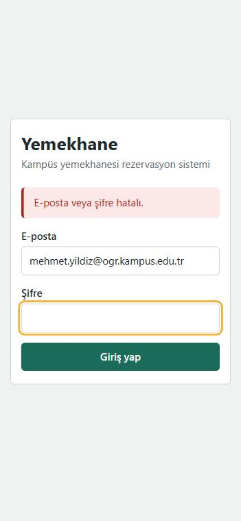
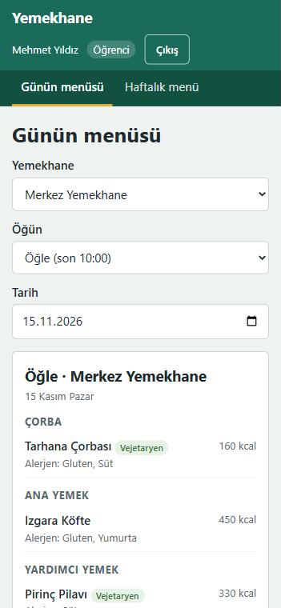
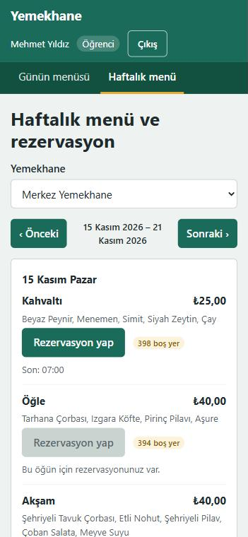
3. haftalık menüdeki düğme artık rezervasyon yapar, 4. Rezervasyonlarım (aktif / kullanıldı / iptal; süresi dolmamış aktif
rezervasyonda "İptal et"), 5. Bakiye (güncel bakiye, son 50 hareket, yükleme). Gruplama ve "iptal edilebilir mi" kararı API'de
(iptalEdilebilir, yordamla aynı son saat koşuluyla SQL'de) verilir; 10–1000 TL kuralı yordamdadır, arayüz yalnızca mesajı gösterir.
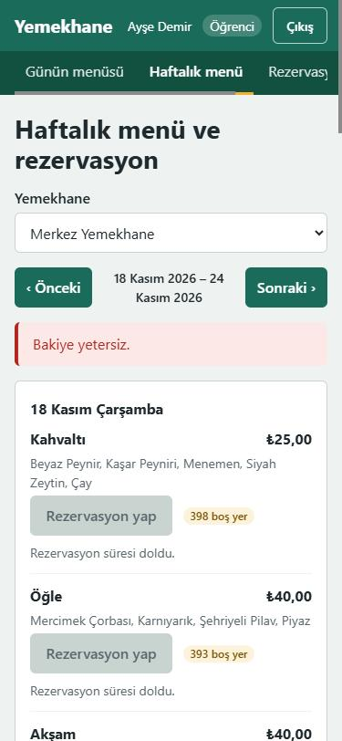
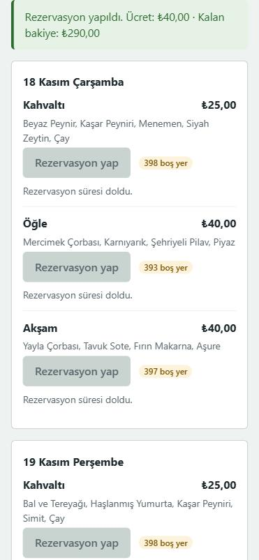
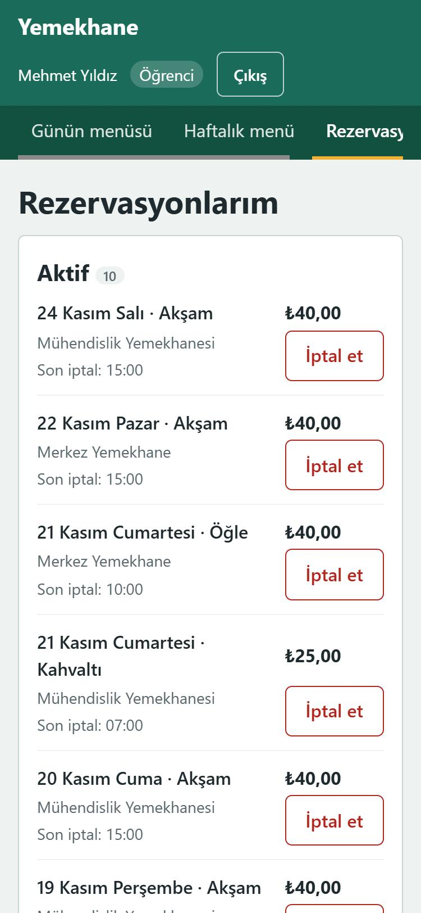
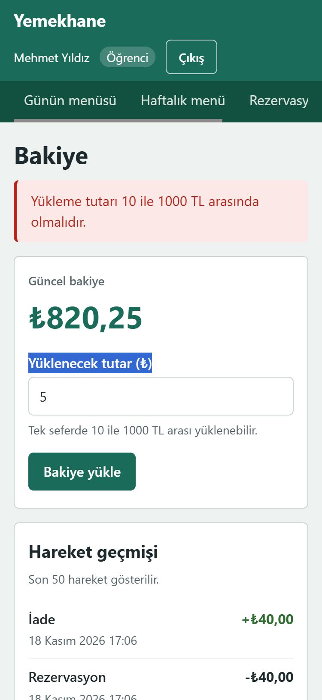
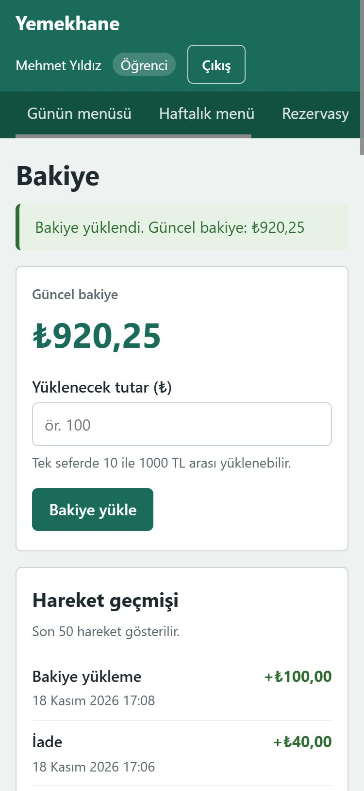
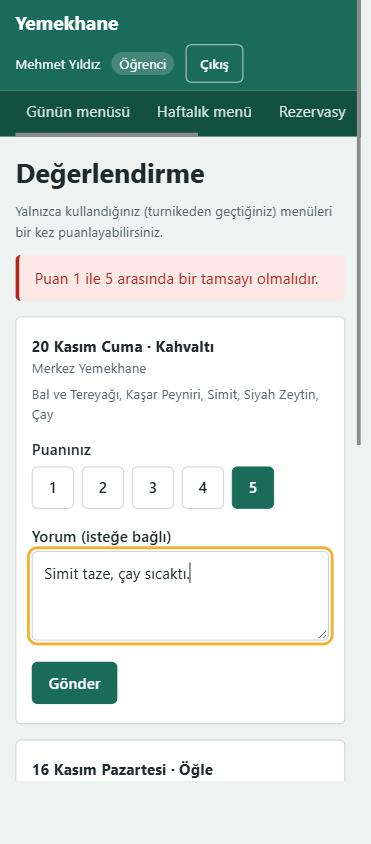
6. Değerlendirme: yalnızca turnikeden geçilmiş (rezervasyonu "kullanıldı") menüler listelenir; puan verilmemiş menüde 1–5 puan ve yorum formu, verilmişse puan ve yorum gösterilir. 7. Yönetici paneli: haftalık menü raporu (doluluk çubuğu, rezerve/kapasite, ortalama puan ve oy sayısı), menü oluşturma ve düzenleme formu (yemekler kategoriye göre gruplu), turnike geçişi. Panel bağlantısı gezinmede yalnızca yöneticiye gösterilir; asıl yetki denetimi API'dedir (403).
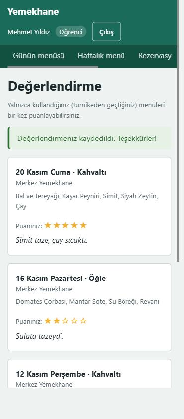
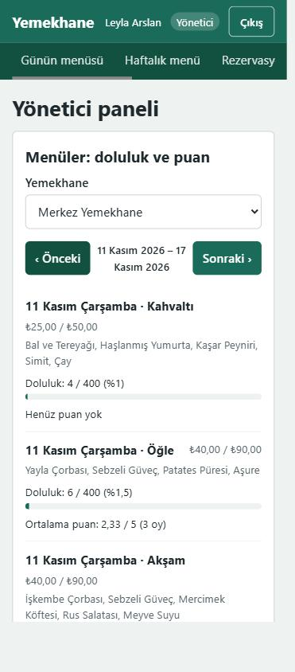
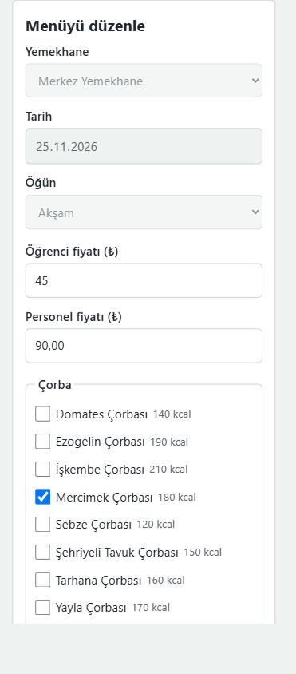
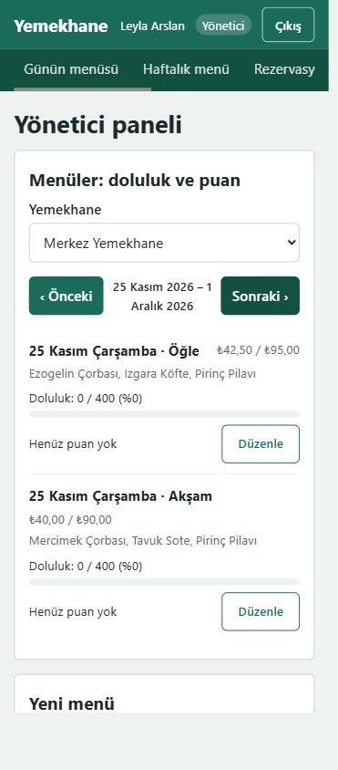
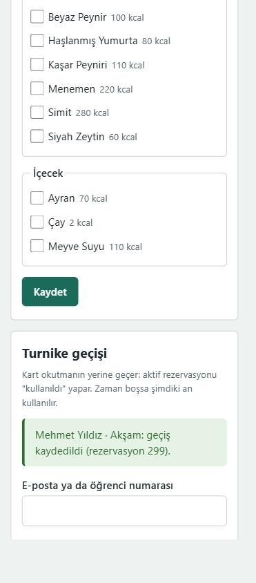
Arayüz mobil öncelikli yazıldı (tek sütun; 640 px üstünde iki/üç sütun). Yedi sayfanın her biri 400 px genişliğinde bir çerçevede açılıp belge genişliği ve sağ kenarı 400 px'i aşan öğe sayısı ölçüldü; gezinme çubuğu bilerek kendi içinde yatay kaydırılır.
> her sayfa için: scrollWidth ve 400 px'i aşan öğeler (rapor/asama-2/05_400px_kontrolu.txt)
/index.html genislik: 400 tasan: []
/menu.html genislik: 400 tasan: []
/haftalik.html genislik: 400 tasan: []
/rezervasyonlarim.html genislik: 400 tasan: []
/bakiye.html genislik: 400 tasan: []
/degerlendirme.html genislik: 400 tasan: []
/admin.html genislik: 400 tasan: []
Yedi ekranın hiçbirinde yatay taşma yok. Dokunma hedefleri (düğmeler, puan kutuları) en az 44 px yüksekliğinde. Bu bölümdeki tüm ekran görüntüleri 375 px genişlikte alındı.
Ödev metninin net olmadığı noktalarda aşağıdaki kararlar alındı. Mümkün olan her yerde kararı şemadaki stored procedure'e bıraktım ("iş kuralı = procedure").
| Konu | Karar | Gerekçe |
|---|---|---|
| Yöneticinin ödeyeceği fiyat | Personel fiyatı | sp_rezervasyon_yap: IF(rol = 'ogrenci', ogrenci_fiyati, personel_fiyati). Arayüz aynı kuralı gösterir. |
| Menü önbelleğinin süresi | Anahtardaki tarihin gün sonu (Europe/Istanbul 23:59:59), EXPIREAT |
"O günün sonuna kadar" şartı. Tarihi geçmiş menüler önbelleğe alınmaz. |
| Migration dosyasının yeri | db/init/04_degisiklik.sql, tekrar çalıştırılabilir (idempotent) |
Temiz kurulumda da çalışır; çalışan sistemde aynı dosya yalnızca kaynağa uygulanır, replikaya replikasyonla geçer. |
| Yarım porsiyon iptalinde iade | Ödenen tutar (%60) iade edilir | rezervasyonlar.ucret ödenen tutarı tutar ve sp_rezervasyon_iptal bu tutarı iade eder. |
| Yarım porsiyon ve kapasite | Yarım porsiyon da bir kişilik yer kaplar | Kapasite yemekhanedeki kişi sayısını sınırlar. |
| Yarım porsiyon yuvarlama | ROUND(fiyat * 0.60, 2) | Para alanları DECIMAL, kuruş hassasiyeti. |
| Turnike geçişi | Yönetici panelinde küçük bir bölüm (sp_turnike_gecis) |
Rezervasyonun "kullanıldı" durumuna geçmesi ve değerlendirme ekranının denenebilmesi için. Ayrı ekran eklenmedi. |
| Giriş sorgusu | Replikadan okunur | Okuma kuralına uygun; girişten hemen önce kullanıcıya yazan bir işlem olmadığı için replikasyon gecikmesi etkilemez. |
| Yordam hatalarının HTTP kodu | 422 + {"mesaj": "..."} |
"İstek anlaşıldı ama iş kuralı izin vermiyor." Mesaj metnine göre farklı kod seçmek kırılgan olurdu. Diğer veritabanı hataları kullanıcıya ham gösterilmez. |
| Yönetici yetkisi | Oturum filtresinde, /api/admin/ ile başlayan her yol için |
Yetki kontrolü tek yerde; yönetici olmayan kullanıcı 403 alır. |
| Oturum cookie'si | HttpOnly; SameSite=Strict; Path=/, Secure yok |
Sistem http://localhost üzerinde çalışıyor; gerçek bir ortamda HTTPS ile birlikte Secure da açılmalıdır. |
| Hatalı giriş mesajı | E-posta ya da şifre hatalı olsa da aynı mesaj ve aynı süre | Hangi e-postaların kayıtlı olduğu anlaşılamasın diye; kullanıcı yoksa da sahte bir bcrypt özetiyle doğrulama yapılır. |
| Menünün önbelleğe girecek kısmı | Yalnızca içerik (yemekler, kalori, alerjen, iki fiyat) | Boş yer, son saat ve kişiye özel alanlar (rolüne göre fiyat, kendi rezervasyonu) sık değişir; her istekte hesaplanır. |
| Bakiye ekranı | Güncel bakiye kaynaktan (primary), hareket geçmişi replikadan okunur | Kullanıcı rezervasyondan hemen sonra Bakiye sayfasına geçerse replika birkaç milisaniye geride olabilir; para bilgisi her zaman taze gösterilmeli. Hareket listesi ise sıradan bir listeleme olduğu için okuma kuralına uyar. |
| Yazmadan sonra okuma | Para hareketinden sonra replikanın yetişmesi en çok 1 sn beklenir (WAIT_FOR_EXECUTED_GTID_SET) |
Ölçülen gecikme yüzünden kullanıcı iptal ettiği rezervasyonu listede hâlâ aktif görüyordu. Okumalar replikada kalır; kullanıcı kendi yazdığını hemen görür. |
| İptal uç noktası | POST /api/rezervasyonlar/{id}/iptal |
Kayıt silinmez; durumu değişir ve ücret iade edilir. DELETE bu anlamı taşımaz. |
| Rezervasyonlarım gruplaması | API aktif / kullanıldı / iptal gruplarını ve iptalEdilebilir alanını döner |
Arayüzde iş kuralı olmasın; son saat karşılaştırması veritabanında, yordamla aynı koşulla yapılır. |
| Hareket geçmişi | Son 50 hareket | Şartta sayfalama istenmiyor; ekran telefonda okunabilir kalır. |
| Yükleme tutarının denetimi | Uygulama yalnızca biçimi denetler (en çok 2 ondalık); 10–1000 TL kuralı yordamda | Kural tek yerde kalır; tutar float'a çevrilmeden DECIMAL'e gider. |
| Değerlendirme | Bir kez verilir, sonradan değiştirilemez; "kullanıldı" kontrolü primary'den | Şema kişi başına menü başına tek oy diyor. Kontrol yazmanın hemen önündeki karar olduğu için replikasyon gecikmesinden etkilenmemeli. |
| Menü düzenleme kapsamı | Fiyatlar ve yemekler değişir; yemekhane, tarih, öğün değişmez. Geçmiş tarihe menü oluşturulmaz, geçmiş menü düzenlenmez | Yemekhane + tarih + öğün menünün kimliği ve önbellek anahtarıdır; geçmiş menüler rezervasyon ve puan kayıtlarıyla bağlıdır. |
| Menü yazmalarında transaction | Yordam yok; uygulama primary'de tek transaction açar | menuler ve menu_yemekleri birlikte değişir; yemeksiz ya da yarım kalmış menü oluşmaz. |
| İş kuralı hatalarının HTTP kodu (uygulama) | Kural ihlali 422, tekrar eden kayıt 409, yetki 403 | Yordam hatalarıyla (422) tutarlı; arayüz yalnızca mesajı gösterir. |